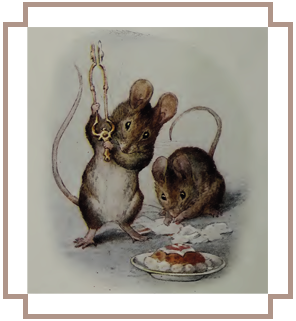
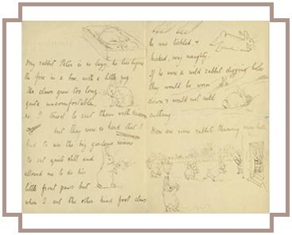
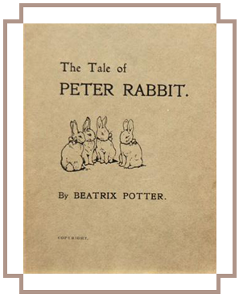

Potter's artistic and literary interests were deeply influenced by fairies, fairy tales and fantasy. She was a student of the classic fairy tales of Western Europe. As well as stories from the Old Testament, John Bunyan's The Pilgrim's Progress and Harriet Beecher Stowe's Uncle Tom's Cabin, she grew up with Aesop's Fables, the fairy tales of the Brothers Grimm and Hans Christian Andersen, Charles Kingsley's The Water Babies, the folk tales and mythology of Scotland, the German Romantics, Shakespeare, and the romances of Sir Walter Scott. As a young child, before the age of eight, Edward Lear's Book of Nonsense, including the much loved The Owl and the Pussycat, and Lewis Carroll's Alice in Wonderland had made their impression, although she later said of Alice that she was more interested in Tenniel's illustrations than what they were about. The Brer Rabbit stories of Joel Chandler Harris had been family favourites, and she later studied his Uncle Remus stories and illustrated them.[41] She studied book illustration from a young age and developed her own tastes, but the work of the picture book triumvirate Walter Crane, Kate Greenaway and Randolph Caldecott, the last an illustrator whose work was later collected by her father, was a great influence. When she started to illustrate, she chose first the traditional rhymes and stories, "Cinderella", "Sleeping Beauty", "Ali Baba and the Forty Thieves", "Puss In Boots", and "Red Riding Hood". However, most often her illustrations were fantasies featuring her own pets: mice, rabbits, kittens, and guinea pigs.
In her teenage years, Potter was a regular visitor to the art galleries of London, particularly enjoying the summer and winter exhibitions at the Royal Academy in London. Her Journal reveals her growing sophistication as a critic as well as the influence of her father's friend, the artist Sir John Everett Millais, who recognised Beatrix's talent of observation. Although Potter was aware of art and artistic trends, her drawing and her prose style were uniquely her own.
As a way to earn money in the 1890s, Beatrix and her brother began to print Christmas cards of their own design, as well as cards for special occasions. Mice and rabbits were the most frequent subject of her fantasy paintings. In 1890, the firm of Hildesheimer and Faulkner bought several of the drawings of her rabbit Benjamin Bunny to illustrate verses by Frederic Weatherly titled A Happy Pair. In 1893, the same printer bought several more drawings for Weatherly's Our Dear Relations, another book of rhymes, and the following year Potter sold a series of frog illustrations and verses for Changing Pictures, a popular annual offered by the art publisher Ernest Nister. Potter was pleased by this success and determined to publish her own illustrated stories.
Whenever Potter went on holiday to the Lake District or Scotland, she sent letters to young friends, illustrating them with quick sketches. Many of these letters were written to the children of her former governess Annie Carter Moore, particularly to Moore's eldest son Noel who was often ill. In September 1893, Potter was on holiday at Eastwood in Dunkeld, Perthshire. She had run out of things to say to Noel, and so she told him a story about "four little rabbits whose names were Flopsy, Mopsy, Cottontail and Peter". It became one of the most famous children's letters ever written and the basis of Potter's future career as a writer-artist-storyteller.
In 1900, Potter revised her tale about the four little rabbits, and fashioned a dummy book of it – it has been suggested, in imitation of Helen Bannerman's 1899 bestseller The Story of Little Black Sambo. Unable to find a buyer for the work, she published it for family and friends at her own expense in December 1901. It was drawn in black and white with a coloured frontispiece. Rawnsley had great faith in Potter's tale, recast it in didactic verse, and made the rounds of the London publishing houses. Frederick Warne & Co had previously rejected the tale but, eager to compete in the booming small format children's book market, reconsidered and accepted the "bunny book" (as the firm called it) following the recommendation of their prominent children's book artist L. Leslie Brooke. The firm declined Rawnsley's verse in favour of Potter's original prose, and Potter agreed to colour her pen and ink illustrations, choosing the then-new Hentschel three-colour process to reproduce her watercolours.
On 2 October 1902, The Tale of Peter Rabbit was published, and was an immediate success. It was followed the next year by The Tale of Squirrel Nutkin and The Tailor of Gloucester, which had also first been written as picture letters to the Moore children. Working with Norman Warne as her editor, Potter published two or three little books each year: 23 books in all. The last book in this format was Cecily Parsley's Nursery Rhymes in 1922, a collection of favourite rhymes. Although The Tale of Little Pig Robinson was not published until 1930, it had been written much earlier. Potter continued creating her little books until after the First World War when her energies were increasingly directed toward her farming, sheep-breeding and land conservation.
The immense popularity of Potter's books was based on the lively quality of her illustrations, the non-didactic nature of her stories, the depiction of the rural countryside, and the imaginative qualities she lent to her animal characters.
Potter was also a canny businesswoman. As early as 1903, she made and patented a Peter Rabbit doll. It was followed by other "spin-off" merchandise over the years, including painting books, board games, wall-paper, figurines, baby blankets and china tea-sets. All were licensed by Frederick Warne & Co and earned Potter an independent income, as well as immense profits for her publisher.
In 1905, Potter and Norman Warne became unofficially engaged. Potter's parents objected to the match because Warne was "in trade" and thus not socially suitable. The engagement lasted only one month until Warne died of pernicious anaemia at age 37. That same year, Potter used some of her income and a small inheritance from an aunt to buy Hill Top Farm in Near Sawrey in the English Lake District near Windermere. Potter and Warne may have hoped that Hill Top Farm would be their holiday home, but after Warne's death, Potter went ahead with its purchase as she had always wanted to own that farm, and live in "that charming village".